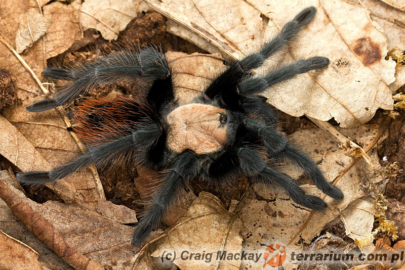

Brachypelma albiceps

Wygląd
Pająki te dorastają do ok. 6–8 cm długości ciała i około 15–17 cm rozstawu odnóży.
Młode nie posiadają cech charakterystycznych, lecz z czasem kolana zaczynają im się odbarwiać na pomarańczowy kolor.
Zachowanie
Przejwiają znikome objawy agresji, a tak naprawde to kompletny jej brak. Młode lubia sobie pokopać, dorosłe osobniki robią to żadziej. Często chowają się w kryjówki które znajdują i delikatnie aranżują po swojemu.
Rozwój
Klasycznie na poczatku rosnie troszkę szybciej, a później ten rozwój zwalnia. Przy większych temperaturach ich metabolizm wzrasta przez co szybciej ptasznik rośnie.
Karmienie
Młode karmimy młodym wylęgiem świersza lub mącznikami. Robaczkom polecam odciąc lub zgnieśc głowę przed podaniem, aby zlikwidować ryzyko uszkodzenia lub zabicia pajączka przy wylince.
terrarium i wyposażenie
Nie potrzebują dużo miejsca. Pojemnik z odpowienią cyrkulacją powietrza 30x30x30 lub nizszy będzie odpowiedni dla dorosłego pająka. Dla młodszych np. L1 może być opakowanie po kliszy, a dla większych takich L5 opakowanie po sałatce.
nie może byc wysoki, ponieważ są to pająki niezdarne i moga spaść podczas wspinaczek. dajemy im grubsza warstwę podłoża tak z 5cm które nie pleśnieje najpopularniejsze jest włókno
kokosowe (tzw. torf). Mile widziana płytka miseczka na wode i kryjówka z nieplesniejącego materiału.
⬅ Powrót do galerii